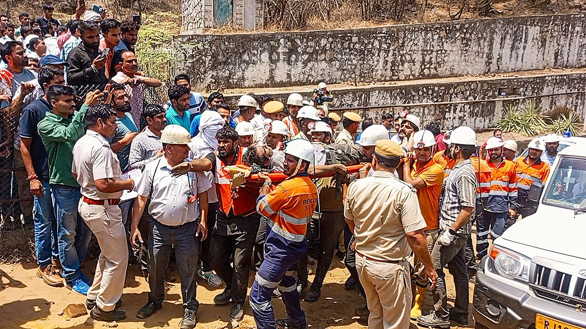
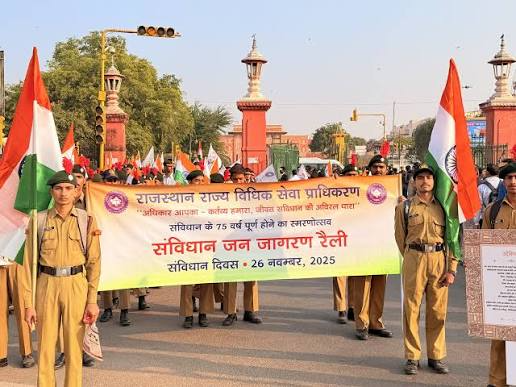
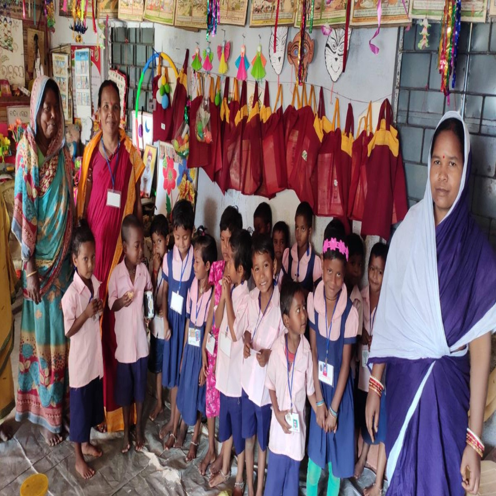
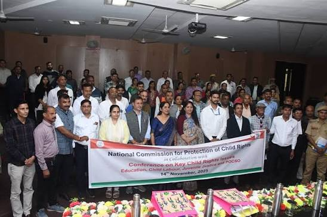
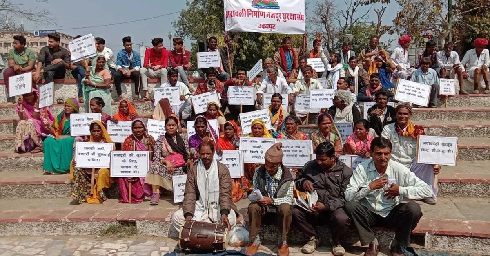
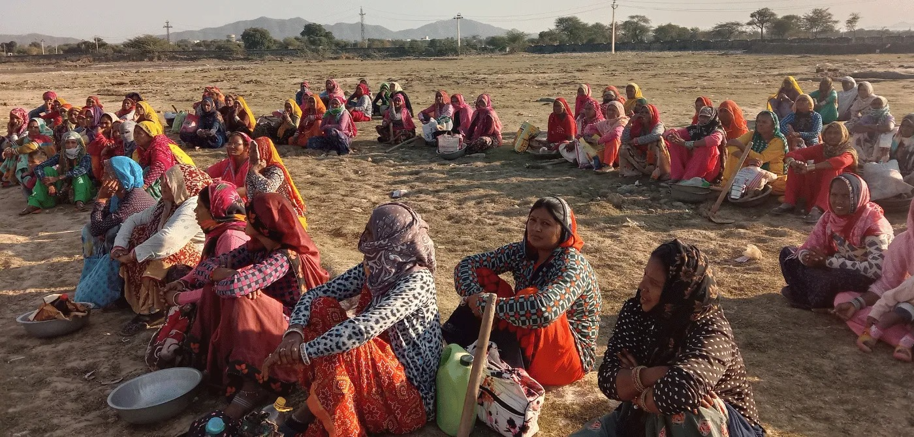
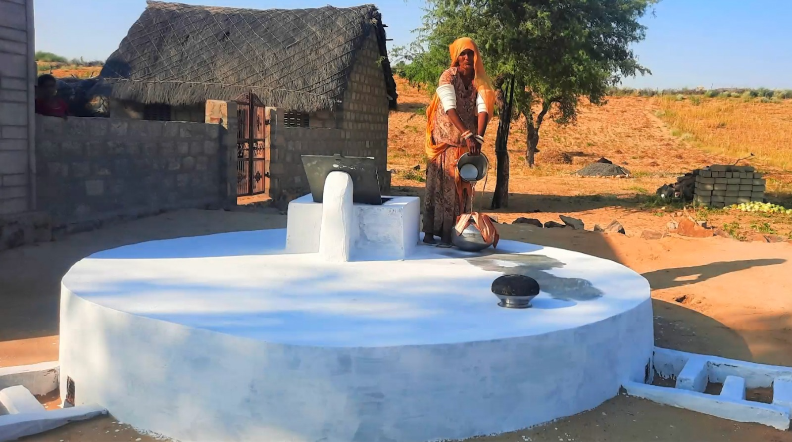
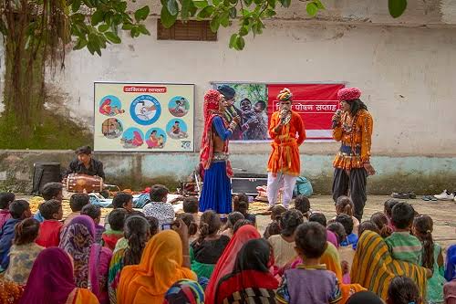
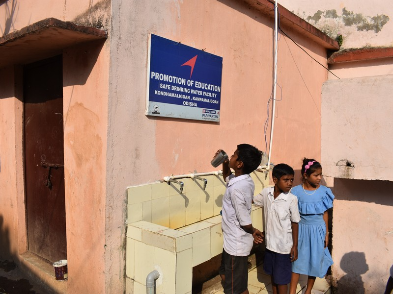
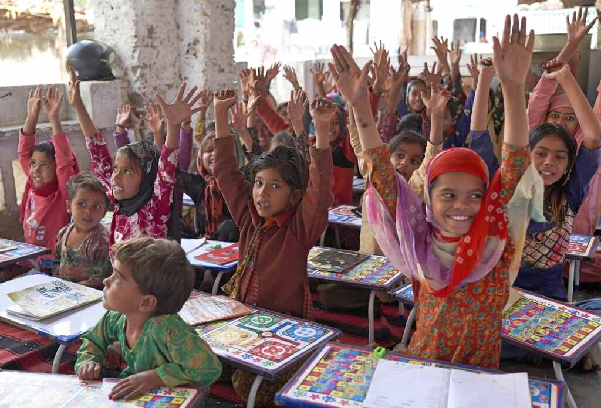

We only suggest trusted, official and verified websites

The Rajasthan Disaster Management, Relief & Civil Defence Department works on disaster preparedness, emergency response, relief operations, and civil defence across the state of Rajasthan.
https://dmrelief.rajasthan.gov.in/
RSLSA works to provide legal aid and legal services to people who need assistance, while promoting access to justice and legal awareness across Rajasthan.
https://rajasthan.nalsa.gov.in/
The department works for the welfare, protection, development, and empowerment of women and children across Rajasthan through government programmes and social welfare initiatives.
https://wcd.rajasthan.gov.in/
The commission works to protect and promote the rights of children in Rajasthan and helps address issues related to child welfare, safety, protection, and development.
https://sje.rajasthan.gov.in/commissions/DCR/
Rajasthan Foundation works to strengthen connections between Rajasthan and its people around the world while supporting development, investment, welfare, and social initiatives in the state.
https://foundation.rajasthan.gov.in/
The Rajasthan Labour Department works to protect workers' rights, promote labour welfare, support employment-related services, and implement labour laws and welfare schemes across the state.
https://labour.rajasthan.gov.in/
GRAVIS works with rural communities, particularly in Rajasthan, on sustainable development, healthcare, water security, livelihoods, education, and community empowerment.
https://gravis.org.in/
Seva Mandir works with rural communities in Rajasthan to improve livelihoods, education, healthcare, natural resource management, and social development through community-led initiatives.
https://sevamandir.org/
Prayatn Sanstha works for social development and community welfare, with programmes supporting vulnerable communities, children, women, health, education, and livelihoods.
https://prayatn.org/
RSKS India works for social welfare and community development, supporting disadvantaged communities through programmes related to education, health, livelihoods, women, children, and rural development.
https://www.rsksajmer.org/